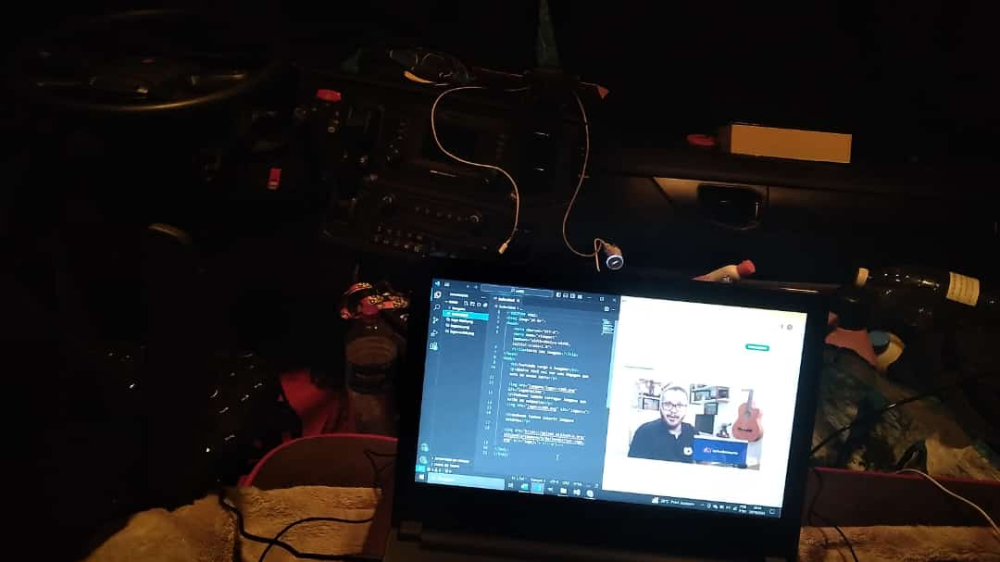

História do Clayton Sales developer
Casado, 4 filhos, 1 neta, atualmente com 43 anos, estudante de tecnologia na faculdadeUninovee, fazendo cursos complementares noCursoEmVideo, se especializando na função de Front-End, aprendendo as linguagens de marcação Html5 e Css3, entrando neste momento na fase da linguagem de programação JavaScript. Iniciando alguns testes no Visualg, realizando testes de algoritimo.
Minha vida profissional
Meu primeiro trabalho profissional foi vendendo uma fruta chamada caqui, esse tabalho foi informal, não demorou muito encontrei trabalho registrado em escritório de advocacia, iniciando na função de office-boy e encerrando na função de aux. administrativo. Vou colocar as funções que exerci profissionalmente para não ficar muito extenso. Claytonsalesdev. Desenvovli diversas atividades de trabalho, vou colacar logo abaixo as funções desenvolvidas, conforme os anos foram passando e fui progredindo. Atualmente sou Motorista Carreteiro, desenvolvo essa função na empresa Transportes Marvel Uma empresa que tem atuação em, todo território nacional e mercosul.
Tenho conhecido diversos lugares no Brasil e outros paises como: Argentina, Paraguay, Chile, Uruguay. Motorista carreteiro tem uma importância muito grande na ecônomia do Brasil e do mundo, pois 95% de toda produção de diversos seguimentos precisa ser transportados por caminhões, principamente no Brasil.
Enquanto desenvolvia a função de "Motorista Carreteiro", por algum tempo nessas longas viagens, me deparei comigo mesmo em alguns momentos, pensando em fazer uma transição de carreira, cheguei a conclusão logo depois de, fazer algumas pesquisas que, iria migrar para "Tecnologia da informação", ainda estou no inicio do planejamento porém, em execução, estudando muito, para conseguir uma vaga na área, e assim esta surgindo o Claytonsalesdev.
Surge na minha vida a "Tecnologia da Informação"
Após algumas pesquisas conforme citei acima, escolhi a tecnologia da informação para transição de carreira, quero me tornar um "PROGRAMADOR", sei que não é nada fácil mas, com esforço e dedicação estou chegando no abjetivo.ClaytonSDev.
Depois de rodar as estradas do Brasil e mercosul na, função de "Motorista Carreteiro", uma pausa para os estudos, nunca desista dos seus sonhos.
Confesso que tem dias que da vontade de desistir, mas logo passa. Na minha vida nada foi fácil, não vai ser diferente na transição de carreira, independente das circustâncias preciso seguir em frente.
Essa foto acima um dos dias de estudo com o professor "Gustavo Guanabara", o principal responsavél pela escolha que fiz, a maneira que ele ministra as aulas, além de ser bem didaticas é também inspiradora, a todo momento ele incentiva os aulunos. Quero agradecer ao Professor Gustavo Guanabara, por compartilhar ensinamentos e inspirar pessoas.
Então é isso! Espero que você tenha gostado de conhecer um pouco sobre mim virtualmente. Vamos marcar um café?